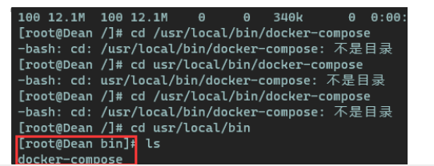
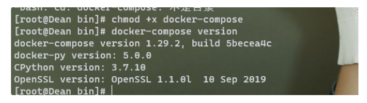
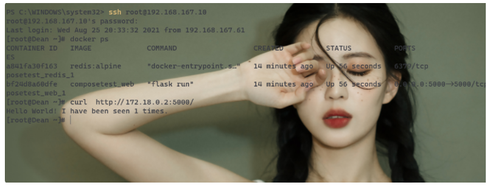
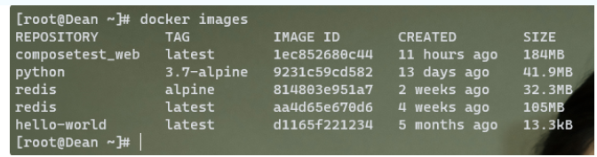
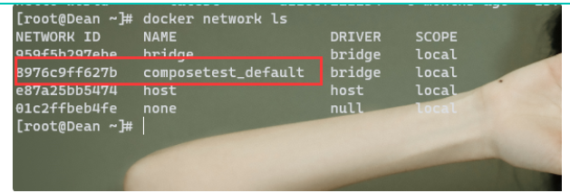
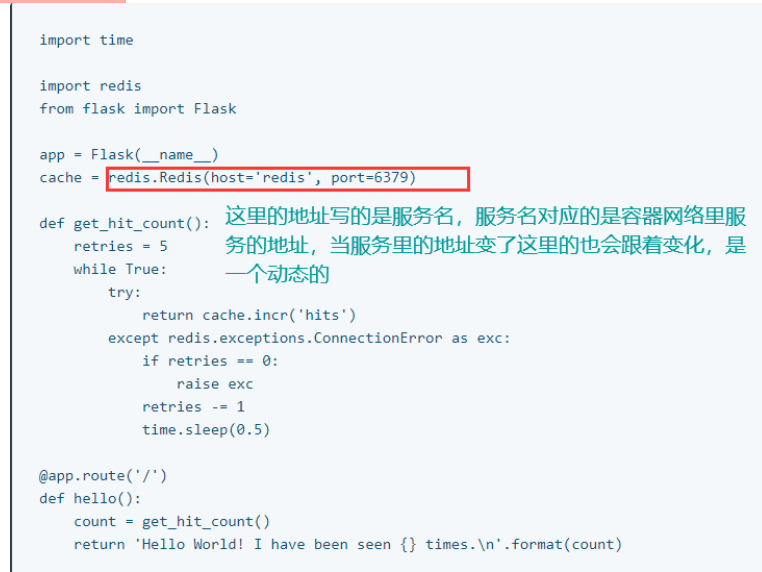
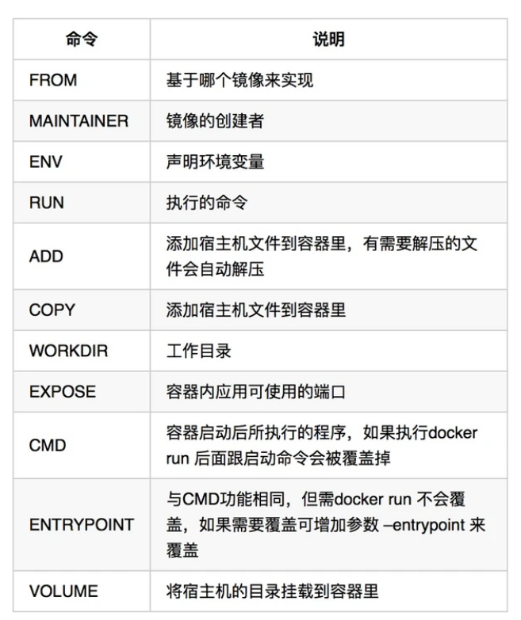

Docker
Docker Compose
简介
之前的流程： Docker –> Dockerfile —> build –> run 全部是手动操作，单个容器！
Docker Compose 来轻松高效的管理容器。定义运行多个容器！
使用Docker Compose 的三部曲
- 使用 定义您的应用程序的环境，
Dockerfile以便它可以在任何地方复制。- Dockerfile保证我们的项目在任何地方运行
- 定义组成您的应用程序的服务，
docker-compose.yml以便它们可以在隔离的环境中一起运行。- service 什么是服务
- docker-compose.yml这个文件怎么写
- 使用Docker-compose up启动
作用：批量容器编排！
理解
Compose是Docker官方的开源项目，需要安装！
compose 的重要概念
- 服务service ，容器应用。（web、redis、mysql）
- 项目project。一组关联的容器。博客
安装compose

1
curl -L "https://github.com/docker/compose/releases/download/1.29.2/docker-compose-$(uname -s)-$(uname -m)" -o /usr/local/bin/docker-compose授权
1
chmod +x docker-compose安装成功

体验
给我们的项目创建一个文件夹
在项目文件夹下创建一个文件，app.py
在我们的项目目录下requirements.txt文件，并且黏贴 flask redis。这个是python的依赖文件，项目依赖的都放在这里，就是pip install 的时候下载的就是这里的。
创建一个Dockerfile
1
2
3
4
5
6
7
8
9
10FROM python:3.7-alpine
WORKDIR /code
ENV FLASK_APP=app.py
ENV FLASK_RUN_HOST=0.0.0.0
RUN apk add --no-cache gcc musl-dev linux-headers
COPY requirements.txt requirements.txt
RUN pip install -r requirements.txt
EXPOSE 5000
COPY . .
CMD ["flask", "run"]这是告诉docker：
- 从Python3.7开始构建镜像
- 将工作目录设置为 /code
- 设置flask命令使用的环境变量
- 安装gcc和其他依赖
- 复制requirements.txt并安装Python其他依赖项
- 将元数据添加到镜像以描述容器正在监听5000端口
- 将项目中的当前目录复制到镜像中的工作目录
- 将容器的默认命令设置为 flask run
创建一个docker-compose.yml
1
2
3
4
5
6
7
8version: "3.9"
services:
web:
build: .
ports:
- "5000:5000"
redis:
image: "redis:alpine"这个yml定义了两个服务，一个web服务和一个redis服务，web服务是用本地的Dockerfile文件build的，如果Dockerfile文件的名字本身就是Dockerfile那么build的时候可以不用指定文件名
Web
该web服务使用从Dockerfile当前目录结构中的镜像文件。然后它将容器和主机绑定到暴漏的端口5000，此示例使用flask web服务器的默认端口5000
Redis
该redis服务使用的是从Docker hub注册表中提取的公共的Redis镜像。
使用Compose构建并运行应用程序
从项目目录下，通过指令 docker-compose up 启动
1
2
3
4
5
6
7
8
9
10
11
12
13
14
15
16
17
18
19
20
21
22
23
24
25
26
27
28
29
30
31
32
33
34
35
36
37
38
39
40
41
42
43
44
45
46
47
48
49
50
51
52
53
54
55
56
57
58
59
60
61
62
63
64
65
66
67
68
69
70
71
72
73
74
75
76
77
78
79
80
81
82
83
84
85
86
87
88
89
90
91
92
93
94
95
96
97
98
99
100
101
102
103
104
105
106
107
108
109
110
111
112
113
114
115
116
117
118
119
120
121
122
123
124
125
126
127
128// 给我们创建了一个Docker网络
Creating network "composetest_default" with the default driver
// 创建web服务
Building web
Sending build context to Docker daemon 5.632kB
Step 1/10 : FROM python:3.7-alpine
3.7-alpine: Pulling from library/python
29291e31a76a: Pull complete
3626a090061d: Pull complete
dccff05a79ae: Pull complete
328cb1305811: Pull complete
e91eabc5840c: Pull complete
Digest: sha256:cb74758aca3c66b1213e5d84fb943f425c7d44a07ba4949e4cf5c690cd855cae
Status: Downloaded newer image for python:3.7-alpine
---> 9231c59cd582
Step 2/10 : WORKDIR /code
---> Running in 997c380ce6eb
Removing intermediate container 997c380ce6eb
---> 257507eadcdc
Step 3/10 : ENV FLASK_APP=app.py
---> Running in 7b760f227db1
Removing intermediate container 7b760f227db1
---> f18da21d848a
Step 4/10 : ENV FLASK_RUN_HOST=0.0.0.0
---> Running in 40dbe5f5170c
Removing intermediate container 40dbe5f5170c
---> 486a51ae8e63
Step 5/10 : RUN apk add --no-cache gcc musl-dev linux-headers
---> Running in b08135697f69
fetch https://dl-cdn.alpinelinux.org/alpine/v3.14/main/x86_64/APKINDEX.tar.gz
fetch https://dl-cdn.alpinelinux.org/alpine/v3.14/community/x86_64/APKINDEX.tar.gz
(1/13) Installing libgcc (10.3.1_git20210424-r2)
(2/13) Installing libstdc++ (10.3.1_git20210424-r2)
(3/13) Installing binutils (2.35.2-r2)
(4/13) Installing libgomp (10.3.1_git20210424-r2)
(5/13) Installing libatomic (10.3.1_git20210424-r2)
(6/13) Installing libgphobos (10.3.1_git20210424-r2)
(7/13) Installing gmp (6.2.1-r0)
(8/13) Installing isl22 (0.22-r0)
(9/13) Installing mpfr4 (4.1.0-r0)
(10/13) Installing mpc1 (1.2.1-r0)
(11/13) Installing gcc (10.3.1_git20210424-r2)
(12/13) Installing linux-headers (5.10.41-r0)
(13/13) Installing musl-dev (1.2.2-r3)
Executing busybox-1.33.1-r3.trigger
OK: 140 MiB in 48 packages
Removing intermediate container b08135697f69
---> fd47d993b371
Step 6/10 : COPY requirements.txt requirements.txt
---> 1e7a7c4aa5cc
Step 7/10 : RUN pip install -r requirements.txt
---> Running in ce3c8b5b666c
Collecting flask
Downloading Flask-2.0.1-py3-none-any.whl (94 kB)
Collecting redis
Downloading redis-3.5.3-py2.py3-none-any.whl (72 kB)
Collecting Jinja2>=3.0
Downloading Jinja2-3.0.1-py3-none-any.whl (133 kB)
Collecting Werkzeug>=2.0
Downloading Werkzeug-2.0.1-py3-none-any.whl (288 kB)
Collecting click>=7.1.2
Downloading click-8.0.1-py3-none-any.whl (97 kB)
Collecting itsdangerous>=2.0
Downloading itsdangerous-2.0.1-py3-none-any.whl (18 kB)
Collecting importlib-metadata
Downloading importlib_metadata-4.6.4-py3-none-any.whl (17 kB)
Collecting MarkupSafe>=2.0
Downloading MarkupSafe-2.0.1.tar.gz (18 kB)
Collecting zipp>=0.5
Downloading zipp-3.5.0-py3-none-any.whl (5.7 kB)
Collecting typing-extensions>=3.6.4
Downloading typing_extensions-3.10.0.0-py3-none-any.whl (26 kB)
Building wheels for collected packages: MarkupSafe
Building wheel for MarkupSafe (setup.py): started
Building wheel for MarkupSafe (setup.py): finished with status 'done'
Created wheel for MarkupSafe: filename=MarkupSafe-2.0.1-cp37-cp37m-linux_x86_64.whl size=14616 sha256=843490b6047c7c0e0d1585883ac846f7dc827a7aa018a8b74ac3cdf69d96ce9a
Stored in directory: /root/.cache/pip/wheels/1a/18/04/e3b5bd888f000c2716bccc94a565239f9defc47ef93d9e7bea
Successfully built MarkupSafe
Installing collected packages: zipp, typing-extensions, MarkupSafe, importlib-metadata, Werkzeug, Jinja2, itsdangerous, click, redis, flask
Successfully installed Jinja2-3.0.1 MarkupSafe-2.0.1 Werkzeug-2.0.1 click-8.0.1 flask-2.0.1 importlib-metadata-4.6.4 itsdangerous-2.0.1 redis-3.5.3 typing-extensions-3.10.0.0 zipp-3.5.0
WARNING: Running pip as the 'root' user can result in broken permissions and conflicting behaviour with the system package manager. It is recommended to use a virtual environment instead: https://pip.pypa.io/warnings/venv
Removing intermediate container ce3c8b5b666c
---> 99033542c096
Step 8/10 : EXPOSE 5000
---> Running in b66e733039a0
Removing intermediate container b66e733039a0
---> 56b2d4c0c31f
Step 9/10 : COPY . .
---> 3b613f01e9cd
Step 10/10 : CMD ["flask", "run"]
---> Running in 68654b0c33c8
Removing intermediate container 68654b0c33c8
---> 1ec852680c44
Successfully built 1ec852680c44
Successfully tagged composetest_web:latest
WARNING: Image for service web was built because it did not already exist. To rebuild this image you must use `docker-compose build` or `docker-compose up --build`.
Pulling redis (redis:alpine)...
alpine: Pulling from library/redis
29291e31a76a: Already exists
16bbd9479e91: Pull complete
d4bb2b90a23b: Pull complete
011b05d94792: Pull complete
3a615fd1f2fd: Pull complete
bd76b8efa6e9: Pull complete
Digest: sha256:b658aeb0824fa240bd04b5017de2379d9707a433cb7040332328996d63c265f6
Status: Downloaded newer image for redis:alpine
// 启动了两个服务
Creating composetest_web_1 ... done
Creating composetest_redis_1 ... done
Attaching to composetest_redis_1, composetest_web_1
redis_1 | 1:C 25 Aug 2021 14:00:36.627 # oO0OoO0OoO0Oo Redis is starting oO0OoO0OoO0Oo
redis_1 | 1:C 25 Aug 2021 14:00:36.627 # Redis version=6.2.5, bits=64, commit=00000000, modified=0, pid=1, just started
redis_1 | 1:C 25 Aug 2021 14:00:36.627 # Warning: no config file specified, using the default config. In order to specify a config file use redis-server /path/to/redis.conf
redis_1 | 1:M 25 Aug 2021 14:00:36.628 * monotonic clock: POSIX clock_gettime
redis_1 | 1:M 25 Aug 2021 14:00:36.629 * Running mode=standalone, port=6379.
redis_1 | 1:M 25 Aug 2021 14:00:36.629 # WARNING: The TCP backlog setting of 511 cannot be enforced because /proc/sys/net/core/somaxconn is set to the lower value of 128.
redis_1 | 1:M 25 Aug 2021 14:00:36.629 # Server initialized
redis_1 | 1:M 25 Aug 2021 14:00:36.629 # WARNING overcommit_memory is set to 0! Background save may fail under low memory condition. To fix this issue add 'vm.overcommit_memory = 1' to /etc/sysctl.conf and then reboot or run the command 'sysctl vm.overcommit_memory=1' for this to take effect.
redis_1 | 1:M 25 Aug 2021 14:00:36.629 * Ready to accept connections
web_1 | * Serving Flask app 'app.py' (lazy loading)
web_1 | * Environment: production
web_1 | WARNING: This is a development server. Do not use it in a production deployment.
web_1 | Use a production WSGI server instead.
web_1 | * Debug mode: off
web_1 | * Running on all addresses.
web_1 | WARNING: This is a development server. Do not use it in a production deployment.
// 至此启动成功
web_1 | * Running on http://172.18.0.2:5000/ (Press CTRL+C to quit)这里有一个警告
1
WARNING: Image for service web was built because it did not already exist. To rebuild this image you must use `docker-compose build` or `docker-compose up --build`.重新build一下,然后再up

启动成功！
看一下Docker为我们下载了哪些东西

Docker 为我们自动下载了docker-compose.yml里面所需要的依赖
网络

compomse为我们生成了一个默认的网络，项目中的内容在同一个网络下，可以通过域名访问。
查看一下网络细节
1
2
3
4
5
6
7
8
9
10
11
12
13
14
15
16
17
18
19
20
21
22
23
24
25
26
27
28
29
30
31
32
33
34
35
36
37
38
39
40
41
42
43
44
45
46
47
48
49
50
51
52
53docker network inspect composetest_default
[
{
"Name": "composetest_default",
"Id": "8976c9ff627bb4b9ed59e37fe2bd85fb9d44d80cf69d2c4c58fd34ee34b982dd",
"Created": "2021-08-25T21:56:27.082056201+08:00",
"Scope": "local",
"Driver": "bridge",
"EnableIPv6": false,
"IPAM": {
"Driver": "default",
"Options": null,
"Config": [
{
"Subnet": "172.18.0.0/16",
"Gateway": "172.18.0.1"
}
]
},
"Internal": false,
"Attachable": true,
"Ingress": false,
"ConfigFrom": {
"Network": ""
},
"ConfigOnly": false,
// 两个服务在同一个网络下，在访问的的时候就可以通过域名访问
"Containers": {
"a841fa30f1638622b3940e6e0878305fb760f7442cd3f288245af4e709e85dd2": {
"Name": "composetest_redis_1",
"EndpointID": "f79f990ac02776b47914b59f85fae80762e4eabf3f65c1fad553a0a9c58364e2",
"MacAddress": "02:42:ac:12:00:03",
"IPv4Address": "172.18.0.3/16",
"IPv6Address": ""
},
"bf24d8a60dfe24a83d08cff57cf761fa41d18beade38a0ab9fb18cb9f1562c53": {
"Name": "composetest_web_1",
"EndpointID": "2daacdf34e07ead0712a74b091c5e25d57f52f37094bdb30e4abc33cb8809780",
"MacAddress": "02:42:ac:12:00:02",
"IPv4Address": "172.18.0.2/16",
"IPv6Address": ""
}
},
"Options": {},
"Labels": {
"com.docker.compose.network": "default",
"com.docker.compose.project": "composetest",
"com.docker.compose.version": "1.29.2"
}
}
]
再次理解compose
以前都是单个容器，项目启动的时候你得一个一个的启动，就 很麻烦，现在有了compose，就可以一件启停。所以说docker-compose里面放着我们这个项目所需要的所有的容器
Docker小结
- images run => 容器
- Dockerfile build 构建镜像
- docker-compose 启动项目
- Docker网络
编写Dockerfile
什么是Dockerfile
Dockerfile是用来描述文件构成的文本文档

如何优雅的编写Dockerfile
- 文件不宜太长，层级越多制作出来的镜像就越大
- 构建出来的镜像不要包含不需要的内容，如日志、安装临时文件等
- 尽量使用运行时的基础镜像，不需要将构建时的过程也放到运行时的Dockerfile里
对比一下
1 | |
1 | |
分析一下
- 第一分全部分层写的，我们知道docker 就像是堆积木是一层一层的，那么第一份就相当于堆了很多层，那么就会占用相对多的内存，当然这点内存对我们来说也不算什么。
- 说一下优点，因为第一层分层了，那么当镜像出现错误的时候需要重修build是，那些没有出错的层就不用重新build了，那么就节省了重构的时间。但是如果Dockerfile非常长的话就要考虑减少层次了，因为Dockerfile做高只能有127层
分析一下第二份
- 这一份和第一份最大的区别在于，他都放在一层写了，那就导致如果这一层有出错的话，就得全部重构那么就比较耗时了，虽然他占用的内存比较少。
如何优雅的写Docker-compose.yml
什么是docker-compoes
docker-compose 把所有需要的镜像包括各种参数和顺序写在一个yml文件里，直接运行这一个配置文件就可以按照你所需要的方法和步骤运行容器。所以称docker-compose为一种镜像编排的方式。
看一下实例
1 | |
Docker Swarm
Docker Stack
Docker Secret
Docker Config
K8s
本博客所有文章除特别声明外，均采用 CC BY-SA 4.0 协议 ，转载请注明出处！